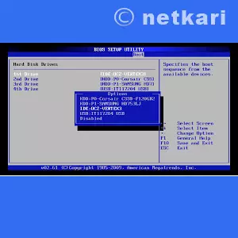
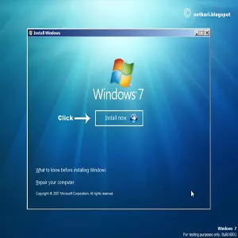
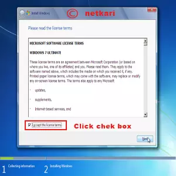
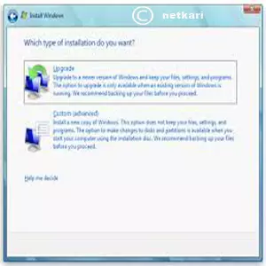
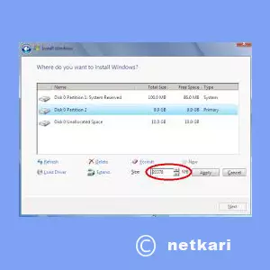
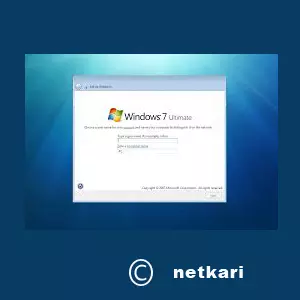
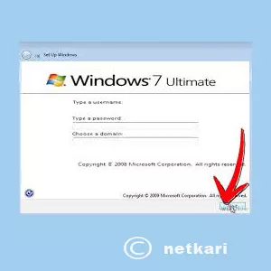
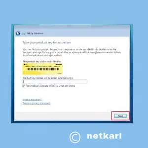
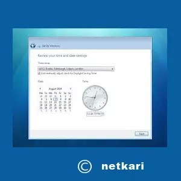
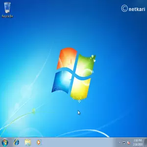

संगणकाचा वापर आज प्रत्येक क्षेत्रात होत आहे. आज भारत डिजिटल होण्यासाठी सर्वच क्षेत्रात संगणक आणि तंत्रज्ञानाचा प्रभावीपणे वापर होत असल्याचे चित्र सर्वत्र दिसत आहे. असे असताना शिक्षण क्षेत्र मागे असून कसे चालेल... खाजगी शाळा, व्यावसाईक शिक्षण देणारे तंत्रनिकेतन शाळा ते सरकारी समजले जाणारे जिल्हा परिषद शाळेत आज ई - लर्निंग सारखे संगणक शिक्षण प्रत्येक खेड्यापाड्यात रुजत असल्याचे चित्र दिसत आहे. हायस्कूल सर पासून ते प्राथमिक गुरूजीही आज स्मार्ट झाले आहेत. संगक खराब अथवा बंध पडल्यास मात्र खुप धावपळ होते. जे कोणी तंत्रज्ञ असतील त्याना ते सांगतील तेवढे पैसे देवून सलाम मरावे लागते. यासाठीच संगणक खराब होऊ नये म्हणून आमचे कांही मुख्याध्यापक संगणकाला कोणाला हात लावू देत नाहीत. आता असे करण्याचे काहीच कारण नाही कारण मी तुम्हाला संपुर्ण संगणक कसं दुरुस्त करायचं या बाबत कानमंत्र देणार आहे. प्रत्येक स्टेप समजावून सांगणार आहे आणि अगदी चित्रासह...
Windows 7 कसं इंस्टॉल करायचं या बाबत पाहू या
**संगणक फॉर्मेट करण्यासाठी लागणारे साहित्य..
1.कोणतेही एक विंडोज CD अथवा DVD.
3.आवश्यक असेल तर इतर सॉफ्टवेयर CD.
** Windows 7 Minimum PC requirement
** boot drive set करणे **
सर्वात प्रथम बूटेबल ड्राइव कोणते सेव आहे पाहुन आवश्यक असेल तर बदल करावे लागते. CD Rom select करावे लागते बूटेबल pen drive वरुन इनस्टॉल करायचे झाल्यास बूटेबल ड्राइव रिमूवेबल डिस्क सेलेक्ट करावे लागेल.
बूटेबल ड्राइव सेट करण्यासाठी CD drive मध्ये बूटेबल CD/DVD टाकून संगणक रीस्टार्ट करा आणि संगणक चालू होत असताना key बोर्ड वरील या पैकी लागू होणारे की प्रेस करा Del, / F2, /ESC, / F18, /F9 प्रत्येक motherboard नुसार की बदलू शकते. शक्यतो डेस्कटॉप संगणकासाठी Del बटन तर लैपटॉपसाठी सर्वसामान्यपणे F2 प्रेस करावे.
आता आपण BIOS सेटिंग मध्ये प्रवेश करतो.
अत्यंत महत्त्वाचे:- BIOS सेटिंग मध्ये माहिती असल्याशिवाय कोठेही काही बदल करायला जाऊ नका. फक्त boot या tab वर क्लीक करा.
सदर BIOS विंडो या प्रमाणे दिसेल... यातील boot tab निवडा. जसे ......

boot disk प्रॉपर्टी वर क्लीक करा
यातील 1 st boot device वर क्लीक करा.
एक यादी दिसेल या मध्ये
1. hard disk
2.CD/DVD Rom
3.Removable Disk
यातील CD/DVD rom निवडा आणि F10 प्रेस करा सेव करु का म्हणून मेसेज येईल Yes करा.
आता संगणक restart होईल. संगणक restart झाल्यावर खालील विंडो ओपन होईल.
जेंव्हा
Press any key to boot from CD/DVD ..
असा मेसज दिसेल तेंव्हा लगेच कोणतेही एक की प्रेस करा प्रेस केल्यावर DVD अथवा CD वरुन boot होउन पुढील विंडो ओपन होईल.
जसे...
सर्व files load होण्यासाठी थोडासा वेळ लागेल त्यासाठी wait करा. काही वेळानंतर language व इतर माहितीचा खालील प्रमाणे विंडो ओपन होईल.
यामध्ये शक्यतो काहीही बदल न करता Next वर क्लिक करून पुढे चला.. आणि पुढील विंडो open होईल. जसे....
वरील विंडोमध्ये दिसणारा Install Now वर क्लीक करून Next वर क्लीक करा..यानंतर Terms and condition
चा विंडो ओपन होईल. जसे..
वरील विंडोमध्ये [] I Accept the License terms समोर असणाऱ्या चेक बॉक्सवर क्लीक करून Next करा. पुढील विंडो उघडेल जसे..
या विंडोमध्ये which window do you want to install
या मध्ये दोन पर्याय दिसतील
1.Upgrade windows
2.Custom Install
तुमच्या गरजे प्रमाणे सेट करता येईल. उदा. समजा माझ्या pc वर windows xp इंस्टॉल आहे तर बदलून windows 7 इंस्टॉल करायच आहे अशा वेळी मी Upgrade Windows हा पर्याय निवडेन. संपुर्ण pc partition सह नव्याने पार्टीशन करायचे असेल तर मात्र नव्याने विंडोज इनस्टॉल करावे लागेल म्हणून दुसरा पर्याय निवडावे लागेल. Custom पर्याय निवडल्यास कांही वेळानंतर पुढील विंडो ओपन होईल. जसे...
या विंडोमध्ये तुमच्या pc मध्ये पूर्वी उपलब्ध असलेले ड्राइव दिसतील यातील ज्या ड्राइववर विंडोज इनस्टॉल करणार आहे ते ड्राइव निवडून next वर लिक करा. संपुर्ण pc फॉर्मेट करण्यासाठी पुढील प्रमाणे विंडो असेल.
जसे...

संपुर्ण pc फॉर्मेट करावयाचे असल्यास Drive option (Advanced) वर क्लीक करा. आता अनेक ऑप्शन दिसतील त्यामधील डिलीट /फॉर्मेट निवडा आणि नव्याने पार्टीशन करण्यासाठी new वर लिक करून पाहिजे तेवढे पार्टीशन करा. आणि ड्राइव निवडून next करा आणि पुढील विंडो उघडेल...
जसे...
या विंडोमध्ये आपल्याला काही करावे लागणार नाही यासाठी 15 ते 20 मिनिटाचा कालावधी लागेल. सर्व file कॉपी होतील, Install ,update आणि फाइनलाइजेशन होऊन 2 ते 3 वेळा संगणक रीस्टार्ट होईल. फाइनललाइज़ेशन झाल्यावर पढिल विंडो ओपन होईल.
जसे...

या विंडोमध्ये user name तयार करा. तुम्हाला जे आवडेल ते नाव द्या जसे abc, somnath, office, Home असे काहीही लिहा फक्त वरच्या बॉक्समध्ये आणि next वर क्लीक करा..password विंडो येईल.
जसे..

हा विंडो ऐच्छिक असेल password नको असेल तर फक्त नेक्स्ट वर क्लीक करा.आता सगळ्यात महत्त्वाचे विंडो ओपन होईल product key विचरणा करणारे विंडो.
जसे...

तुमच्याजवळ विंडो key असेल तर की टाकून नेक्स्ट करा अन्यथा खाली असलेल्या चेक बॉक्सवर क्लीक करून नेक्स्ट करा पुढे कधी की उपलब्ध झाल्यावर key टाकून activate करा. आता सेटिंगचा विंडो येईल त्यामधील पहिल्या पर्याय क्लीक करा आपोआप सेटिंग होईल. यानंतर Time आणि Date चा विंडो येईल.
जसे..

या विंडोमध्ये date, Time आणि timezone निवडा. timezone मध्ये +5:30 Chennai, Dhelhi दिसेल यावर क्लीक करून select करा आणि next करा..
आता नव्या नवलाइने आपल्या समोर नवीन विंडो ओपन होईल.
जसे...
